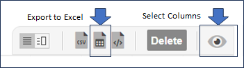

The import option is restricted to members of the Permission Set Role "Can Perform Bulk Operations". If you are not in a User Group that is in this role in a project's Permission Set then you will not see the option in your menu.
All you have to do is set the Items Grid to display the columns you want to import, use the Export to Excel option that is also on the grid, and you have a template. Edit the downloaded spreadsheet, delete all the data bar the header row and the Item Key (Gemini will generate a key for every imported item so you should not specify it in your template), and then put your data to be uploaded in its place.
We recommend you import a small batch of data (5-10 records) first, to test out the data and familiarize yourself with the process.
Documentation on Gemini's Excel Import can be found here.
You can import dependencies by mapping a column to the Dependency field, and entering either an existing item id if the parent is already in Gemini, or the row number in Rx format to designate the parent. R2 will be the 1st data row when you have headers.
You cannot import attachments using the Import Wizard. For that type of operation you need to use the REST API, which has an Item Attachment Endpoint.
Gemini needs acces to that folder. On the web server, right click on %Gemini%/App_data/imports folder, select properties...security, and add the User Group "Everyone" with full control.
The most likely cause of this is that you are trying to put text into a number, probably in a Custom Field. Make sure your import file has a header, and make sure the numeric fields in each column have valid numeric data. Numbers should not be initialized to high values, they should be initialized to zero.